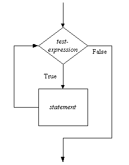

Here's what the flowchart for a repetitive construct looks like,

Remember that in a flowchart you move along the lines in the direction of
the arrows. So in this flowchart we enter and begin at the test expression
which we evaluate. The test expression will be the same kind of relational
expression we used in if statements earlier. If the expression
evaluates to True we execute the statement, and then return to
the text expression and reevaluate it. If it is still True we
execute the statement again and return yet again to the test expression. This
looping continues as long as the text expression remains True.
But as soon as the test expression is False the statement is
skipped and execution continues below it in the program.
N.B. the statement need not be a simple statement, it may be a compound statement consisting of many simple statements including other repetition constructs.